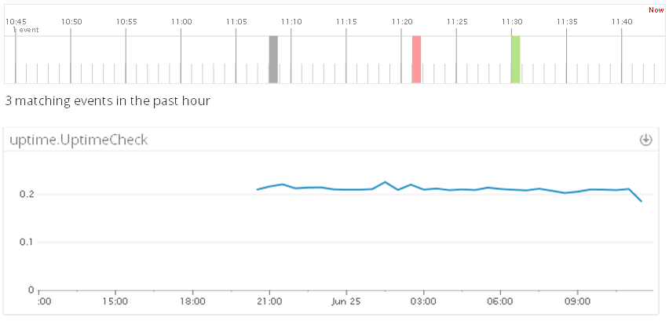

Uptime
Get events and metrics from your app in real time to

To beging capturing metrics and events see the Uptime.com documentation at:
https://support.uptime.com/hc/en-us/articles/115002536629-Configuring-Datadog.
You will need to enter the following values when setting up the integration at Uptime.com:
API Key: xxxxx
Application Key: xxxxx